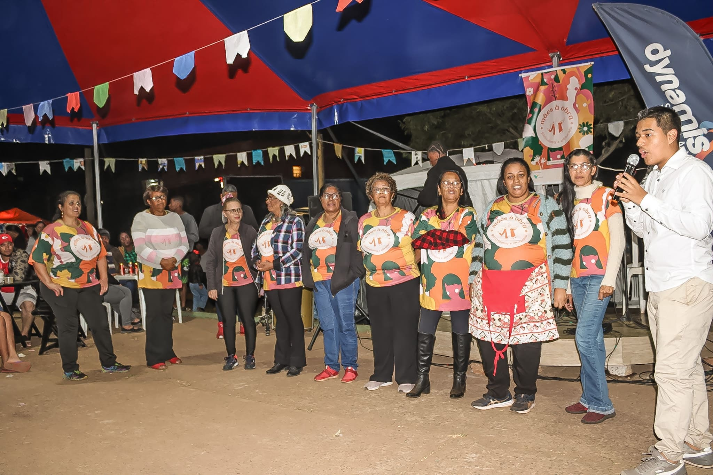
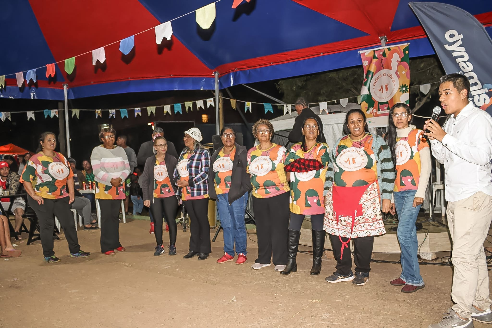
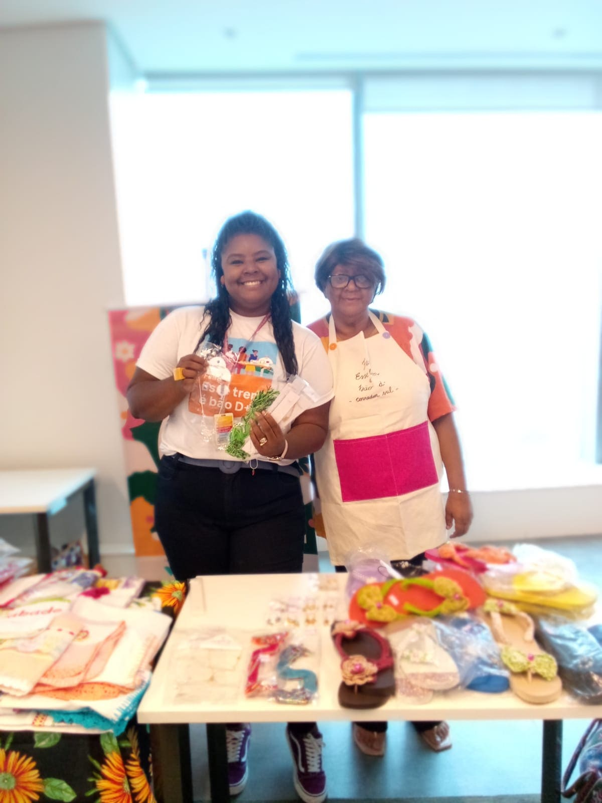
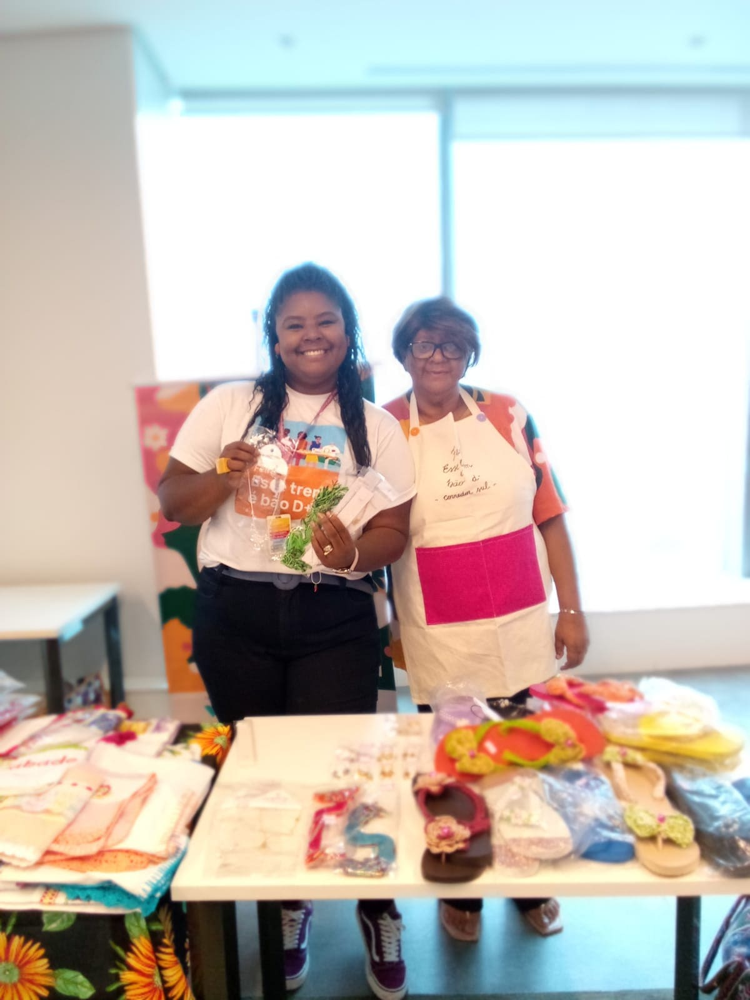

Feiras
As feiras do projeto Mães à Obra são eventos vibrantes e repletos de oportunidades para toda a comunidade.
Elas são um palco aberto para que cada participante do projeto encontre ali uma chance de brilhar e encantar o público com seus produtos de gastronomia ou artesanato.
Imagine um espaço onde as famílias podem não apenas ganhar uma renda extra, mas também vivenciar momentos de lazer e socialização. Filhos, maridos e outros parentes se envolvem e fortalecem os laços familiares enquanto colaboram com as atividades da feira.
Venha conhecer e se encantar com as feiras do Mães à Obra, um verdadeiro ponto de encontro de talentos, oportunidades e alegria para todos!

 


Em junho, a Feira Mães à Obra ocorreu junto da Festa Junina da Dynamis, com comidas típicas, shows de artistas locais, brincadeiras e quadrilha.
Feira Junina
08 de Junho de 2024Em junho, a Feira Mães à Obra ocorreu junto da Festa Junina da Dynamis, com comidas típicas, shows de artistas locais, brincadeiras e quadrilha.


Em maio, a Feira Mães à Obra foi realizada com a temática do Dia das Mães. Além de shows e atrações para crianças, houve um sorteio de lindas cestas de produtos para o ganhador presentear no dia das mães.
Feira de Dia das Mães
11 de Maio de 2024Em maio, a Feira Mães à Obra foi realizada com a temática do Dia das Mães. Além de shows e atrações para crianças, houve um sorteio de lindas cestas de produtos para o ganhador presentear no dia das mães.


A Feira Mães à Obra, em abril, realizada na praça da comunidade, celebrou o outono e recebeu shows de diversos artistas e atrações para as crianças, como pintura facial.
Feira de Outono
20 de Abril de 2024A Feira Mães à Obra, em abril, realizada na praça da comunidade, celebrou o outono e recebeu shows de diversos artistas e atrações para as crianças, como pintura facial.


Em março, a feira Mães à Obra aconteceu em parceria com o evento de celebração de 4 anos do restaurante da Verinha, empreendimento do bairro localizado na praça.
Feira de aniversário do restaurante da Verinha
10 de Março de 2024Em março, a feira Mães à Obra aconteceu em parceria com o evento de celebração de 4 anos do restaurante da Verinha, empreendimento do bairro localizado na praça.


{kind=link}
{kind=link}
{kind=link}
{kind=link}
{kind=link}
{kind=link}
{kind=link}
{kind=link}
{kind=link}
{kind=link}
{kind=link}


 

{kind=link}
Além das Feiras mensais no bairro, organizadas pelo grupo Mães à Obra, as integrantes também participam de feiras em empresas, como a Vale e Ápia.
Feiras Externas
Além das Feiras mensais no bairro, organizadas pelo grupo Mães à Obra, as integrantes também participam de feiras em empresas, como a Vale e Ápia.